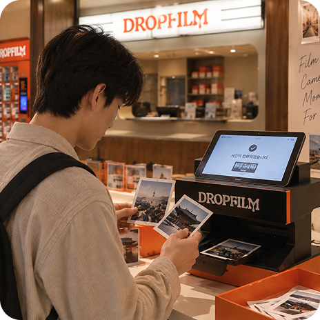
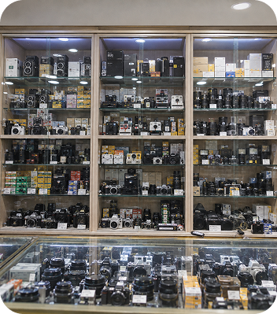
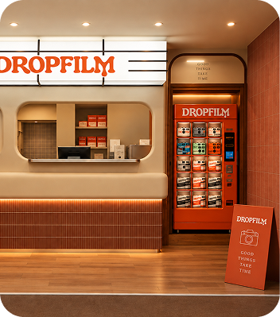
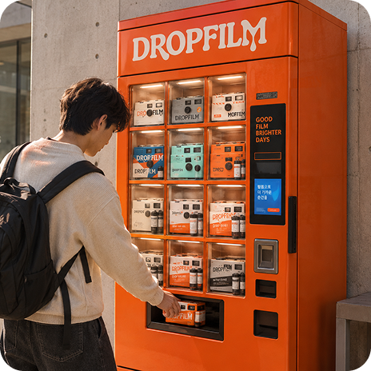
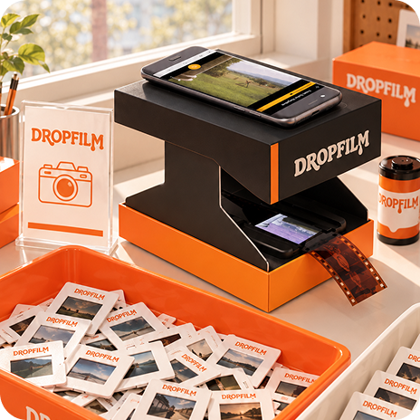
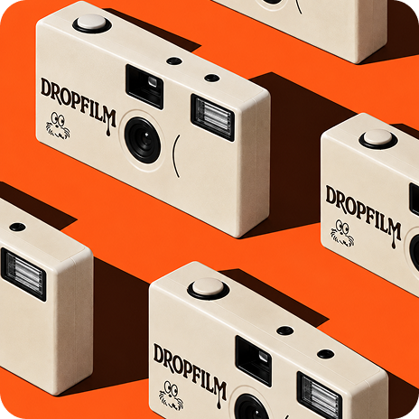
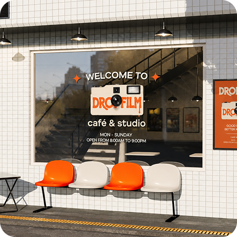
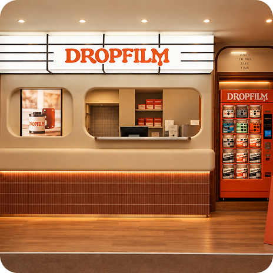
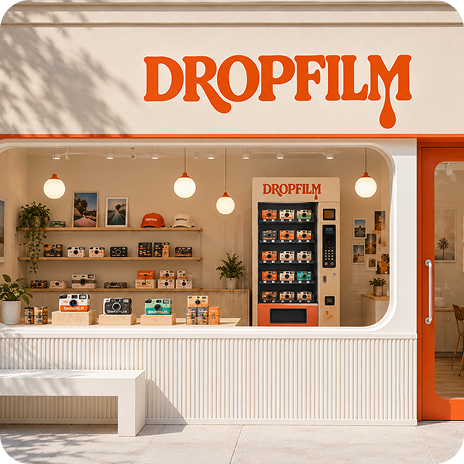
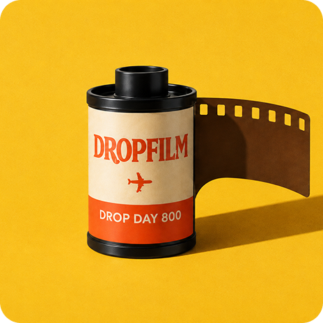

Closer to Film
필름을 더 가까운 경험으로 만드는 DROP FILM
VISION
복잡했던 필름의 과정을 단순하게 바꾸고, 누구나 쉽게 필름을 시작할 수 있도록 합니다.
-

-

-

DROP FILM의 특별함
기존 일회용 카메라의 번거로운 현상 과정은 줄이고
DROP FILM은 구매부터 촬영, 현상 접수, 사진 수령까지 하나의 흐름으로 이어갑니다.
-

BEFORE
일반 일회용 카메라
-
촬영 후 직접 현상소를 찾아야 함
-
현상·스캔 접수 과정이 번거로움
-
사진 수령 방법과 진행 상태 확인이 어려움
-
여행지에 따라 이용 가능한 현상소가 다름
BEFORE
촬영 이후가 번거로운 필름
-
-

AFTER
DROPFILM 무인 매장
-
DROPFILM에서 간편하게 카메라 구매
-
촬영 후 가까운 지점 어디서나 DROP
-
현상·스캔 과정을 한 번에 접수
-
여행 동선에 맞춘 무인 지점 이용
AFTER
촬영 후 결과물까지 빠르게 연결
-
STAFF SERVICE STAFF SERVICE STAFF SERVICE
SELF SERVICE SELF SERVICE SELF SERVICE

SYSTEM
복잡했던 필름을
더 간결한 시스템으로.






